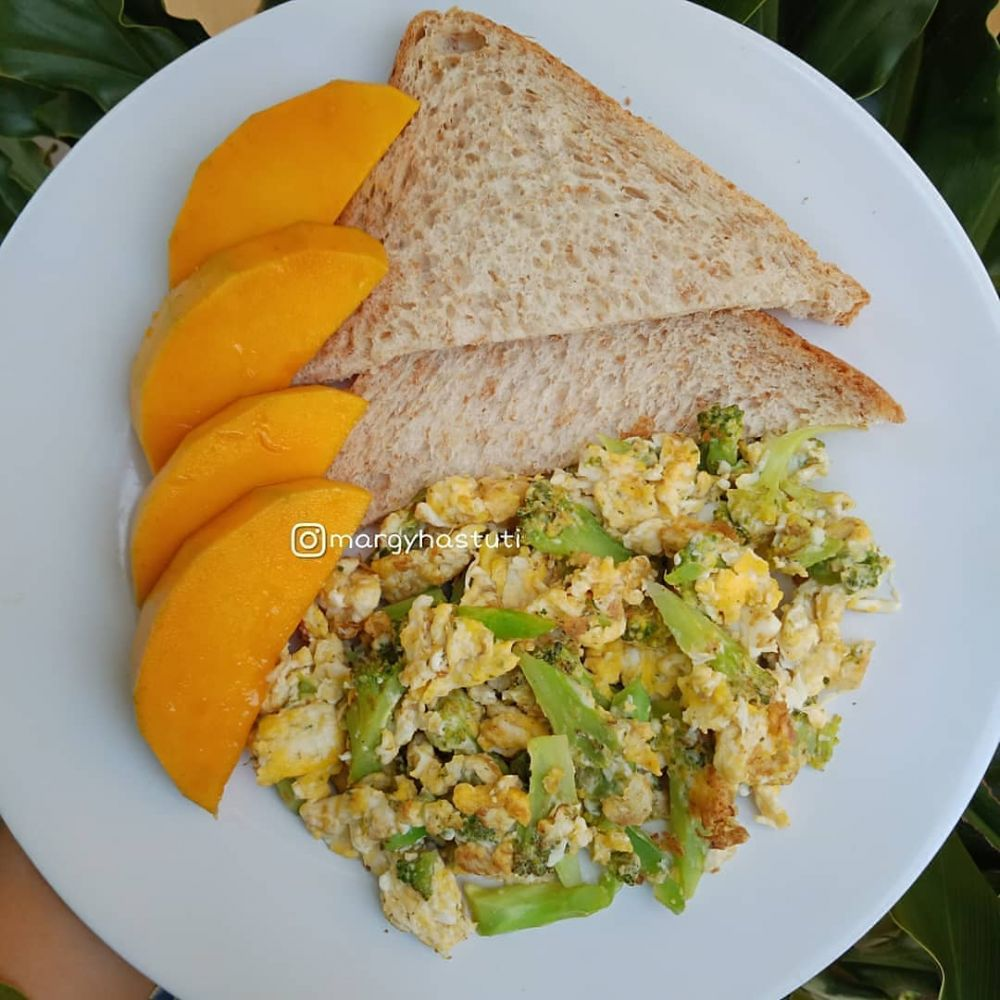
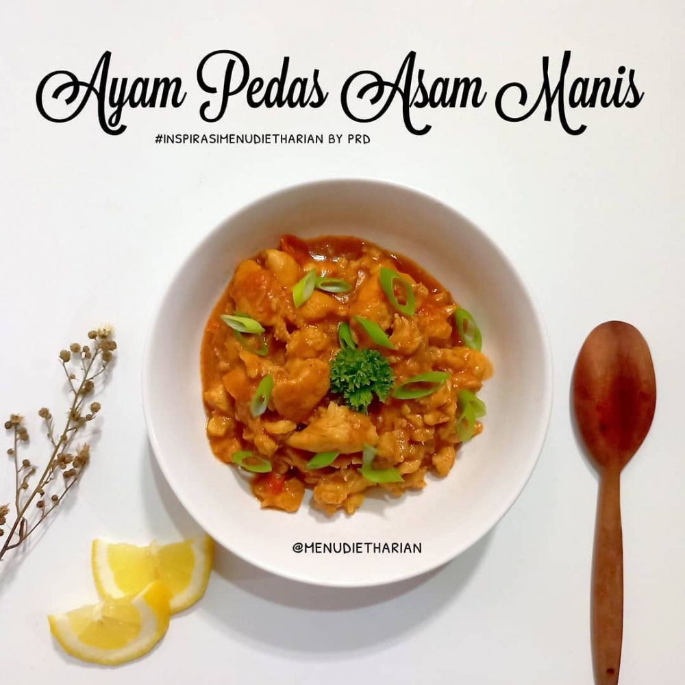
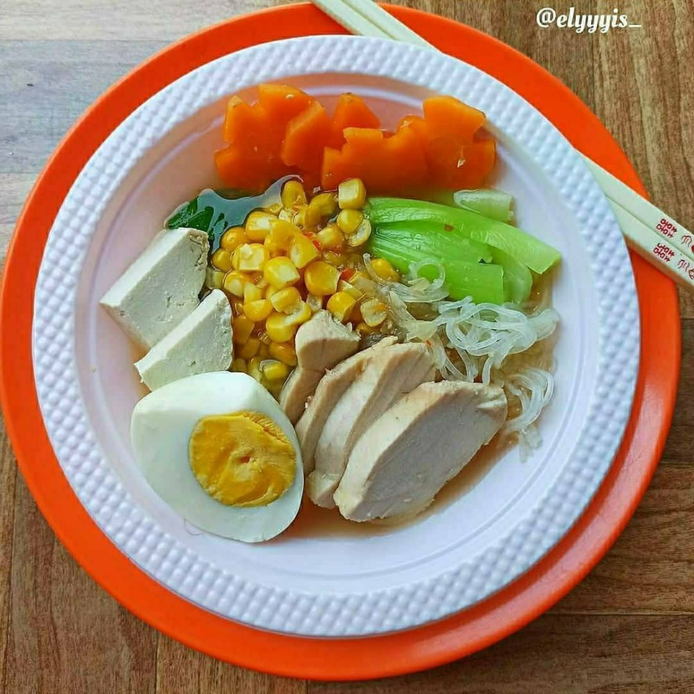

bawang merah, bawang putih, cabai, ... sedikit garam, ½ sdt minyak ziatun untuk menumis
Cara memasak
Tumis bawang dan cabai, Masukkan daun bayam, masak sampai layu, Tambahkan kecambah. Beri sedikit garam.
kalori yang terkadung 38kkl

Roti mangga
Roti mangga
Bahan
1 slice roti gandum, Mangga, 2 telur, Brokoli
Cara masak
Orak arik telur dan brokoli, ... Sajikan dengan roti dan irisan mangga.
Kalori yang terkandung : 60kkl

Ayam pedas manis
Ayam pedas manis
Bahan
100 gram ayam dada fillet, 1 siung bawang putih cincang, ... daun bawang, ambil bagian putihnya, perasan lemon, 1 buah tomat potong dadu, ½ sdt garam, 1 sdm pasta tomat, 1 sdm kecap manis.
Cara masak
Rendam ayam dengan semua bumbu kecuali tomat selama 10 menit, panaskan pan, masukkan rendaman ayam, beri sedikit air, masak hingga matang, masukkan tomat, masak sebentar.
Kalori yang terkandung : 165kkl

Ramen diet
Rebus air, masukkan dada ayam dan beri kecap asin, cacah bawang merah, bawang putih, dan cabai masukkan ke rebusan ayam, masukkan jahe, garam, gula pasir, dan penyedap. Masak kurang lebih 20 menit, tiriskan potongan ayam, saring airnya, ambil bawang dan cabai lalu blender, masak lagi air kuahnya, tambahkan bawang dan cabai blender, tuang fiber cream.
kalori yang terkandung : 188kkl Cream soup
Cream soup
Bahan
200 gram ayam fillet,
1 buah wortel, potong dadu kecil, ...
2 siung bawang putih dicincang halus,
300 ml susu cair,
400 ml air,
½ bawang bombay, potong dadu,
4 buah bakso, potong dadu,
4 sdm tepung terigu + 100 ml air,
1 sdt lada bubuk,
garam secukupnya,
minyak goreng secukupnya,
roti tawar panggang,
Cara masak
Rebus ayam sampai empuk, angkat dan tiriskan, potong sesuai selera, rebus wortel sampai empuk di kuah ayam, tumis bawang putih dan bawang bombay. Masukkan susu cair, garam, dan lada. Masak sampai mendidih, campur ke dalam panci kuah rebusan ayam, masukkan lagi ayam, beri bakso, aduk rata, tambahkan campuran terigu, masak sampai agak kental.
Kalori yang terkandung : 38kkl